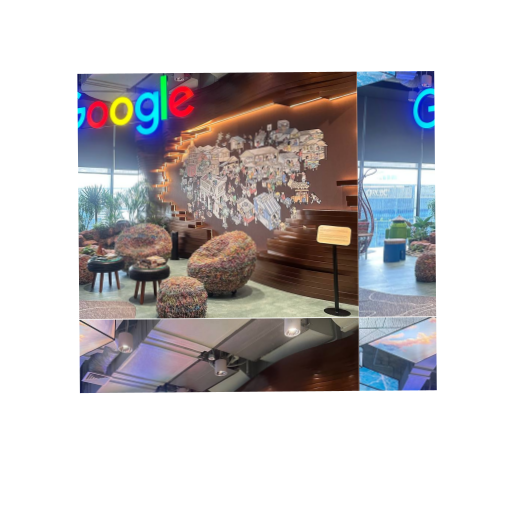
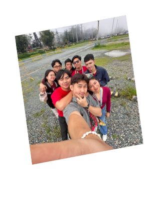
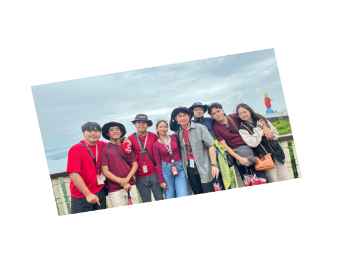

Stephanie Mei
Day 1

Day 2

Day 3


Day 4

Day 5

Day 6

When we visited Foundever, we learned a lot about the nature of their work and the wide range of services they offer. With IT BPM They also explained their BMP and gave us insights on what opportunities we could pursue if we work there in the future.
Day 1
FOUNDER & GOOGLE
JUNE 9
When we visited Google, I was amazed by their setup, which had a strong Filipino vibe. Atty. Gonzalez explained Google’s purpose, how it started, what job opportunities they offer, and we also had a tour of their headquarters.

At Kollab, they conducted a seminar about their company and talked about how to create a good portfolio and UI/UX. They also explained useful algorithms that we could apply in our thesis.

DAY 2
TELEPERFORMANCE & KOLLAB
JUNE 10
At Teleperformance, they gave a brief explanation about what the company does, then we had a tour of their office. After that, we practiced how to conduct a job interview and had a short Q&A about how to apply and get hired.
DAY 3
ADB & MICROSOURCING
JUNE 11
ADB was my favorite company during the tour. We started with a tour of their company, then they explained how ADB began and what their purpose is, and we even had the chance to interact with Sir Matt and had a Q&A session about their company.
At Microsourcing, like the other companies, they explained how they started and gave us a tour of their office. They also showed us how to improve our LinkedIn profiles, and their employees were very interactive throughout the visit.

DAY 4
Tagaytay
June 12
MicroSourcing is a business process outsourcing (BPO) and offshoring company based in the Philippines. Founded in 2006, it specializes in staff leasing, allowing international businesses to build dedicated remote teams of Filipino professionals.
 
DAY 5 & 6
BAGUIO
JUNE 13-14
We had an overnight stay in Baguio where we visited PMA, Bell Church, the Strawberry Farm, and Mines View. We really enjoyed the day tour, and at night we went to the night market and stopped by Burnham Park, the next morning, we went back to Burnham to bike and ride the mermaid boat; definitely a trip full of core memories.